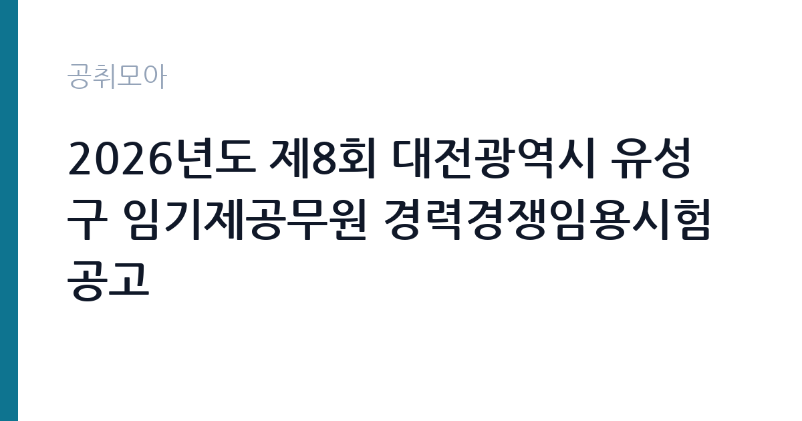

[지자체] 2026년도 제8회 대전광역시 유성구 임기제공무원 경력경쟁임용시험 공고
대전광역시 유성구 · 대전 · 마감 2026-10-08 (D-10) · 출처 나라일터

한눈에 보는 모집 조건
| 기관 | 대전광역시 유성구 |
|---|---|
| 공고명 | 2026년도 제8회 대전광역시 유성구 임기제공무원 경력경쟁임용시험 공고 |
| 고용형태 | 임기제 |
| 근무지 | 대전 |
| 게시일 | 2026-09-28 |
| 마감일 | 2026-10-08 (D-10) |
지원자격, 이렇게 읽으세요
- 일반임기제 7급 1명 시간선택제임기제 마급 6명
- 접수 ~2026-10-08 마감
- 세부 조건은 원문 공고문 확인
분야별로 요구되는 자격증과 경력이 다르므로 본인 지원 분야의 공고문 항목을 정독해야 합니다. 구정홍보 시각화(일반임기제 7급)는 디자인과 영상 관련 전공이나 실무 경력이, 치매안심센터 임상심리사는 임상심리사 자격이 핵심 요건일 것으로 보입니다. 단속 분야는 관련 법규 이해와 현장 대응 능력이 평가됩니다. 임기제 채용의 함정은 경력 인정 범위입니다. 프리랜서 경력이나 단기 경력이 인정되는지, 자격증 취득 예정자는 응시 가능한지를 원문에서 확인하십시오.
이 공고의 포인트
이 공고의 특징은 한 번에 5개 분야 7명을 뽑는 묶음 채용이라는 점입니다. 본인에게 맞는 분야를 골라 지원할 수 있고 분야별 경쟁률이 분산되는 효과가 있습니다. 치매안심센터 임상심리사는 전문 자격 소지자만 지원할 수 있는 희소 분야라 자격 보유자에게는 기회가 큽니다. 시간선택제 마급 6명 중 주 20시간 자리도 있어 시간을 나눠 쓰고 싶은 분께도 선택지가 있습니다. 접수 3일이라는 짧은 일정이 변수이므로 서둘러야 합니다.
전형은 어떻게 진행되나
경력경쟁임용시험으로 서류전형과 면접시험으로 진행됩니다. 접수 기간은 10월 6일부터 10월 8일까지 3일간이며 응시 방법은 직접방문 또는 등기우편입니다. 온라인 접수가 없으므로 우편 접수자는 배송 일정을 역산해야 합니다. 문의처는 유성구청(042-611-2319)입니다. 분야별 세부 일정은 공고문을 확인하십시오.
원문에서 확인한 전형 방식
○ 모집분야 /선발직급 /채용인원 - 구정홍보시각화 : 일반임기제 7급(주40시간) / 1명 - 불법주정차단속(35시간) : 시간선택제임기제 마급(주35시간) / 3명 - 불법주정차단속(20시간) : 시간선택제임기제 마급(주20시간) / 1명 - 옥외광고물 지도단속 : 시간선택제임기제 마급(35시간) / 1명 - 치매안심센터(임상심리사) : 시간선택제임기제 마급(35시간) / 1명 ○ 자격요건 : 공고문 참고 ○ 접수기간 : 2026년 10월 6일(화) ~ 2026년 10월 8일(목) ○ 응시방법 : 직접방문 또는 등기우편 ○ 문의처 : 042-611-2319
이런 분께 추천해요
- 디자인과 영상 실무자에게 구정홍보 시각화 자리가 맞습니다. 일반임기제 7급 전일제라 안정적인 근무가 가능합니다.
- 임상심리사 자격 보유자에게 치매안심센터 자리가 기회입니다. 전문직이라 지원자가 제한적입니다.
- 단시간 근무를 원하는 분께 주 20시간 단속 자리가 있습니다. 시간선택제의 유연함을 활용할 수 있습니다.
지원 전 체크리스트
- 지원 분야의 자격요건(자격증과 경력 연수)을 원문에서 확인했습니다. 분야마다 요건이 다르므로 다른 분야 기준으로 준비하지 마십시오.
- 접수 방법(방문과 등기우편)과 마감일(10월 8일)을 확인했습니다. 온라인 접수가 없으므로 우편 발송일을 앞당기십시오.
- 근무시간(주 40시간·35시간·20시간)별 보수를 확인했습니다. 시간선택제는 시간 비례로 보수가 산정됩니다.
- 유성구청 문의처(042-611-2319)를 저장했습니다. 자격요건 해석이 애매하면 접수 전에 문의하십시오.
모집 일정과 제출 타이밍
접수는 10월 6일부터 10월 8일까지 단 3일입니다. 오늘이 9월 29일이므로 준비 기간은 약 1주일입니다. 방문 접수가 가능하면 10월 6일 첫날 접수하고, 등기우편이라면 10월 5일까지 발송해야 합니다. 경력증명서 발급에 며칠이 걸리므로 이번 주 초에 신청하십시오. 서류전형 이후 면접이 이어지므로 자기소개와 분야별 현안 답변도 미리 준비해 두는 것이 좋습니다.
직무 이해하기: 지자체
구정홍보 시각화는 구정 소식과 정책을 카드뉴스와 영상으로 만드는 업무입니다. 불법주정차 단속은 관내 단속과 과태료 부과, 민원 응대를 맡습니다. 옥외광고물 지도단속은 간판과 현수막의 허가 여부 점검과 불법 광고물 정비가 중심입니다. 치매안심센터 임상심리사는 치매 선별검사와 인지 프로그램 운영, 가족 상담 지원을 수행합니다. 모두 구민 접점 업무라 현장 대응력과 친절한 소통이 요구됩니다.
자기소개서 작성 팁
지원 분야의 실무 경험을 수치로 쓰십시오. 홍보 분야는 제작 건수와 조회수, 단속 분야는 담당 구역과 민원 처리 건수, 임상심리 분야는 검사와 상담 실적이 설득력을 높입니다. 유성구의 현안에 대한 이해를 한 문단으로 보여주면 좋습니다. 시간선택제 지원자는 근무시간 활용 계획과 장기 근무 의지를 구체적으로 쓰십시오. 경력경쟁 전형이므로 직무 적합성이 서류의 핵심 평가 요소입니다.
면접 준비 포인트
면접에서는 분야별 현안 대응을 묻는 질문이 중심이 됩니다. 홍보 분야는 구정 이슈의 시각화 방안, 단속 분야는 민원인 갈등 상황 대처, 임상심리 분야는 치매 대상자 상담 사례를 준비하십시오. 공직자로서의 청렴성과 친절 행정 의지를 묻는 공통 질문에도 대비해야 합니다. 시간선택제 근무자로서의 책임감과 인수인계 방식을 구체적으로 말할 수 있어야 합니다.
급여·근무조건 읽는 법
정확한 보수는 원문 공고문의 연봉표에서 확인하셔야 합니다. 참고로 2026년 시간선택제임기제 마급 채용 사례(전남 장성군, 주 35시간 기준)에서는 연봉 하한액 약 2,951만 원에서 상한액 약 4,784만 원 범위에서 경력에 따라 결정됐습니다(출처: 퍼블릭타임스 2026년 보도). 주 20시간 자리는 시간 비례로 산정됩니다. 일반임기제 7급은 전일제 연봉제로 공고문 하한액을 원칙으로 하되 경력에 따라 협의됩니다. 2026년 지방공무원 보수는 3.5% 인상됐습니다(출처: 행정안전부 2025년 12월 보도자료).
자주 묻는 질문
- 5개 분야에 중복 지원할 수 있나요?
임기제 묶음 채용은 통상 1인 1분야 지원이 원칙입니다. 중복 지원 가능 여부는 원문 공고문에서 확인하시고, 본인 경력과 가장 맞는 한 분야에 집중하는 것이 유리합니다. - 온라인 접수는 안 되나요?
이 공고의 응시 방법은 직접방문 또는 등기우편입니다. 온라인 접수는 없으므로 우편 접수자는 10월 8일 도착분을 맞추기 위해 여유 있게 발송하십시오. - 근무 기간은 어떻게 되나요?
임기제 공무원의 임용 기간은 공고문에 명시되며 통상 1~2년에서 시작해 성과에 따라 연장됩니다. 정확한 기간과 연장 조건은 원문 공고문에서 확인하십시오.
함께 보면 좋은 공고
[지자체] 2026년도 제6회 정읍시 임기제공무원 임용시험 시행 계획 5차공고(복합문화센터 운영) — 마감 2026-10-07[지자체] 2026년도 제7회 전남광주통합특별시 지방임기제공무원 임용시험 계획 공고(문화행정, 대외협력지원, 운전 및 공용차량 관리) — 마감 2026-10-08[지자체] 2026년 제8회 옥천군 시간선택제임기제공무원 임용시험 계획 공고(비서) — 마감 2026-10-16출처: 나라일터 공개정보를 바탕으로 공취모아가 정리한 안내글입니다. 모집 조건·일정은 변경될 수 있으니 지원 전 반드시 원문 공고문을 확인하세요. 본 글은 정보 제공용이며 합격을 보장하지 않습니다.